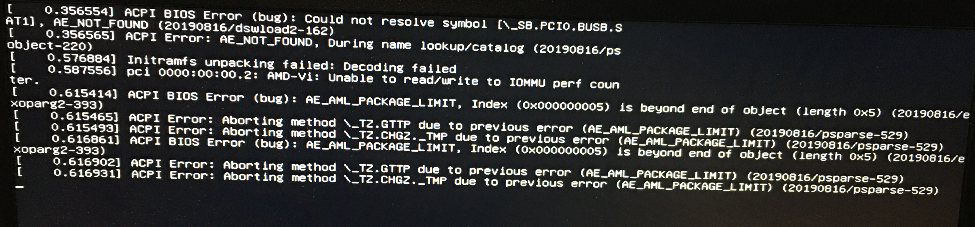
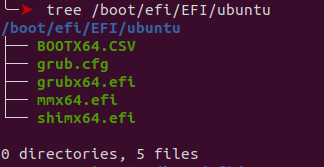

笔记本安装 Linux 遇到的 ACPI BIOS Error 分析
刷机过程
之前买了一个新出的 HP 笔记本，因为 ACPI BIOS Error 装不上 Linux, 雪藏半年。后来因为要回家，以前我都是把电脑硬盘拆了带走，这次想带笔记本，所以再挣扎了一下，没想到成功了。本文记录了这一过程和背景知识。
太长不看：
想在新出的笔记本装 Linux, 应该
- 首先到 linux-hardware 这个网站, 看有没有成功按照上 Linux 的案例.
- 优先考虑 Ubuntu。
- 更新 BIOS/UEFI, 更新内核.
- 如果还不行, 就只能坐等更新.
刷机经历
- 装 Kali, Manjaro, Arch, Fedora 多次失败。
- ParrotOS 提供
acpi = off[1]的 Grub 选项, 但调节不了亮度, 关不了机。 - 最后才装 Ubuntu，ACPI 正常，显卡和触摸板仍有问题。
- 更新到最新内核 5.10, 必须是带签名版本, 否则不能启动. 我最后装的是 5.10.0-1008-oem. 5.10 要求开启 secure boot, 先在 UEFI/BIOS 上关了 secure boot 装系统, 装完后用旧的内核运行系统, 装 5.10, 然后重进 UEFI, 开启 secure boot. 系统完美运行. 看系统启动日志 ACPI 已经启动.
[ OK ] Created slice system-systemd\x2dbacklight.slice.
Starting Load/Save Screen Backlight Brightness of backlight:acpi_video0...
[ OK ] Finished Load/Save Screen Backlight Brightness of backlight:acpi_video0.
...
[ OK ] Started ACPI Events Check.
...
[ OK ] Listening on ACPID Listen Socket.
...
[ OK ] Started ACPI event daemon.
以下是我提交到 linux-hardware 的记录.
- https://linux-hardware.org/?probe=4149fbf824
- https://linux-hardware.org/?probe=230e0b5182
- https://linux-hardware.org/?probe=1e5e57866d
ACPI 的细节
关于 BIOS/UEFI 可以看这本书 Hands-on Booting Learn the Boot Process of Linux, Windows, and Unix by Yogesh Babar, ACPI 看官方文档[2] 。以下是一些简单的知识整理。
- ACPI(Advanced Configuration and Power Interface) 是用来控制电源设备的一个公开标准[3], 在固件(BIOS 或 UEFI) 和操作系统之间定义一层抽象. 固件提供功能实现, ACPI 充当中间层, 提供操作系统上的运行时服务, 这样一来操作系统就不需要知道具体的固件指令.
- ACPI 还避免了直接的物理控制. 传统模式中, 你按电源按钮关机就会马上断电(我没试过), ACPI 模式中则是给 CPU 发出中断, CPU 准备好之后向 ACPI 发出关机指令.
- ACPI 提供 2 种数据类型[3:1], data table 和 definition blocks. Data table 供设备驱动使用的原始数据(raw data). ACPI Machine Language(AML) 解析器将用 AML 写的 definition blocks 解析成 Objects, objects 是设备的控制方法. ACPI 命名空间是一个 OS 层面的 Objects 集合. 可以定义 APCI 是一个函数
- ACPI 和操作系统启动过程
- 固件更新 ACPI tables
- 首先更新 XSDT: 指定了其他 ACPI tables 的地址
- FADT: 指向 DSDT, 后者指向 definition blocks
- 固件将控制交给 bootloader, 随后操作系统启动, 通过 DSDT 创建 ACPI 命名空间.
- 操作系统遍历 ACPI 命名空间, 加载命名空间里面的设备的驱动.
- 固件更新 ACPI tables
- 例子: 控制温度
- 操作系统在 ACPI 命名空间找到 thermal zone, 加载 thermal zone handler .
- 温度达到某个目标点的时候, 硬件产生一个 GPE(general purpose event).
- 操作系统收到这个事件, 调用 thermal zone handler, 后者在 ACPI 命名空间寻找 object. 找到之后, 让 ACPI 执行在这个 object, 控制电量.
- Thermal zone handler 处理其他事务, 比如开启风扇, 降低设备性能.
- 关于为何 Linux 出现 ACPI 错误, Askubuntu 有个阴谋论色彩的回答[4], 说有些主板的 ACPI 是 Windows 用的, Linux 要破解每个主板的 ACPI 才能使用. ACPI in Linux – Myths vs. Reality 称不兼容的一个常见原因是 Windows 使用 real-time clock 而 Linux 用 programmable interrupt timer. 我更新了 UEFI, 但半年中, Ubuntu 是否更新了内核, 我不确认, 所以不确定关键因素是什么.
- 根据我们对 ACPI 的了解, 再看报错信息
- 
- 猜想: 是一个越界问题, AML 解释器 definition blocks 解析出来的 object 只有 5 个, Index 0x05 访问越界(AE_AML_PACKAGE_LIMIT). 因为这个问题, 导致 definition blocks 转换 ACPI Namespace 的过程失败. 里面的 method(control method object) 无法转换成对应项,
\_TZ.GTTP,\_TZ.CHGZ._TMP等等 .
- Secure Boot 的作用是防止恶意软件[5], 微软首先实践了这个理念, 凡是 UEFI 启动的程序(bootloader, 比如 GRUB), 都必须经过签名验证. 标准规定 UEFI 应提供禁用 Secure Boot 的选项. 如果没有禁用验证的选项, 则 Linux 需要用微软的密钥签名. 最后 Linux 社区和微软达成协议, Linux 可以用微软的密钥, 同时 Linux 也想出 multi state bootloader 的策略, 将一个极少更新的 bootloader(shim.efi) 签名, 用来启动常规 bootloader(grubx64.efi).
- 